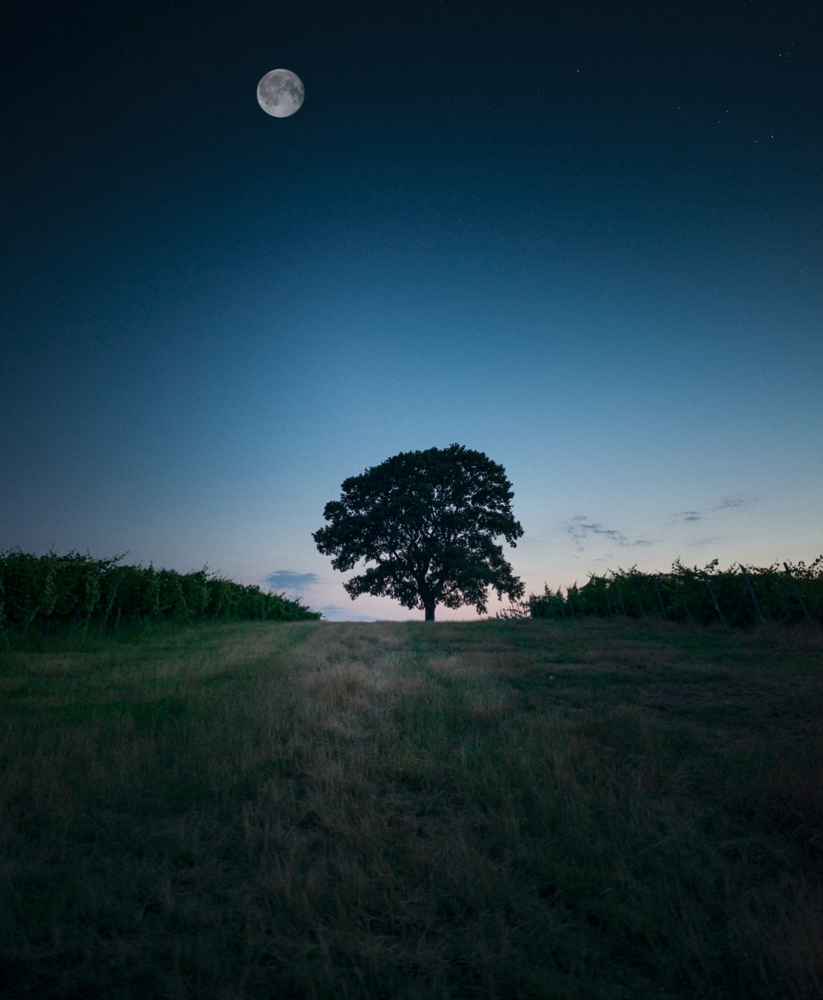
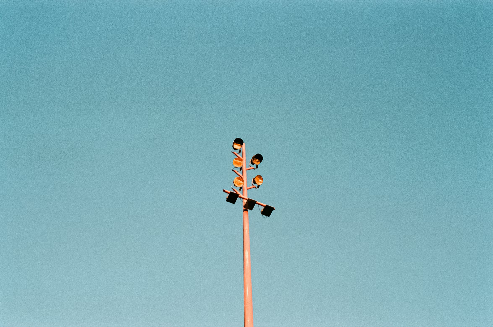

image-compare
want to compare two images side by side with possibly applying some effects to them? say no more!
i don't want blob of technical text, take me to the cool stuff!
installation
add the following line of code to the cool project you are working on:
<script type="module" src="https://cdn.jsdelivr.net/gh/barishnamazov/image-compare@main/src/index.js"></script>
usage
now you can use image-compare like any other tag:
<image-compare alt="Alt text for comparison" direction="horizontal">
<img src="cat.png" slot="image-1"/>
<img src="dog.png" slot="image-2"/>
</image-compare>
attributes
there are two reflected attribute properties: alt and direction. alt attribute is not visible and its purpose is to make this element accessible to people using screen readers. direction attribute takes two values, horizontal and vertical, both of which are self-explanatory. when its value is invalid or not given, direction will default to horizontal.
slots
there are only two slots: image-1 and image-2. they can technically be any elements, but the intended and tested usage for them requires them to be images. image-1 represents the left image in the horizontal direction while image-2 represents the right image. in the vertical mode, image-1 and image-2 represent the top and the bottom pictures, respectively.
it is advised that the pictures have the same dimensions for the consistency of the comparison. if the images have different sizes, image-2 will be resized to have the same dimensions as image-1. this will not work well with non-image elements.
styling
first, note that image-compare is a block-level element, but you can change it freely to make your project as cool as possible. there is a lot of opportunities to style the comparison component. you can choose to style images, but filter functions for them are also provided. below are the css variables that should be used for the best results.
--initial: 50%; /* the initial exposure of image-1 */
--image-1-filter: none; /* same as css's own filter */
--image-2-filter: none;
--divider-size: 2px;
--divider-color: white;
--thumb: /* omitted svg data */;
--thumb-size: 2em;
--thumb-background-color: white;
--thumb-opacity: 0.9;
--thumb-border: 2px solid black;
examples
thanks to unsplash, we have most of the pictures below. note the following css is applies to all img tags below to make sure you get to see them nicely. in addition, all the images are lazy loaded, but that detail is omitted in the example codes.
img {
width: 400px;
max-width: 80vw;
}
juxtapose your favorite views
<image-compare alt="tree in the dawn and the night">
<img src="../examples/tree1.png" slot="image-1"/>
<img src="../examples/tree2.png" slot="image-2"/>
</image-compare>

go vertical
<image-compare direction="vertical">
<img src="../examples/lilypads.jpeg" slot="image-1"/>
<img src="../examples/hydrangea.jpeg" slot="image-2">
</image-compare>
filter it
<image-compare style="--image-2-filter: blur(1px) grayscale(50%) hue-rotate(90deg);">
<img src="../examples/3d-spiral.png" slot="image-1"/>
<img src="../examples/3d-spiral.png" slot="image-2"/>
</image-compare>
change divider color and size
<image-compare style="--divider-color: black; --image-2-filter: saturate(5);">
<img src="../examples/colored-cacti.jpg" slot="image-1"/>
<img src="../examples/colored-cacti.jpg" slot="image-2"/>
</image-compare>
customize the thumb
<image-compare style="
--thumb-size: 3em;
--thumb-opacity: 1;
--thumb-background-color: green;
--thumb-border: 5px solid navy;
--image-2-filter: invert(1)
">
<img src="../examples/lights.jpg" slot="image-1">
<img src="../examples/lights.jpg" slot="image-2">
</image-compare>
